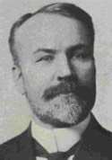

GMBH Tree - Person Sheet
GMBH Tree - Person Sheet

NameRev. Dr. James Alexander Macdonald  1649,3054,3055,3056,3057,3058,3059,3060,3061,3062,1657,3063,3064,3065,3066,3067,3068,3069,3070,3071,3072,3073,3074,3075,3076,3077,3078
1649,3054,3055,3056,3057,3058,3059,3060,3061,3062,1657,3063,3064,3065,3066,3067,3068,3069,3070,3071,3072,3073,3074,3075,3076,3077,3078
1649,3054,3055,3056,3057,3058,3059,3060,3061,3062,1657,3063,3064,3065,3066,3067,3068,3069,3070,3071,3072,3073,3074,3075,3076,3077,3078Birth22 Jan 1862, East Williams Twp, Ontario, Canada1649,3054,3055,3057,3058,3059,3061,1657,3063,3064,3066,3067,3068,3070,3074
OccupationClergyman, Editor of the Toronto Globe
ReligionPresbyterian
FatherJohn Alexander Macdonald (1818-1899)
MotherJane Grant (1820-1878)
Spouses
1Grace Lumsden Christian 3079,3080,3081,3082,3083,3084,3085,3086,3087,3088,3089,3090,3091,3092,3093,3094,3095,3096,3097,3098,3099,3100,3101,3102
3079,3080,3081,3082,3083,3084,3085,3086,3087,3088,3089,3090,3091,3092,3093,3094,3095,3096,3097,3098,3099,3100,3101,3102Birthabt 1868, Delaware, Middlesex Co, Ontario, Canada3079,3081,3082,3083,3085,3087,3089,3090,3091,3093,3098
BurialToronto, Ontario, Canada3096
FatherWilliam Christian (~1836-1899)
MotherHarriet Lumsdon Anderson (~1841-1920)
Marriage11 Jun 1890, Oil City, Ontario, Canada3072
Notes for Rev. Dr. James Alexander Macdonald
Clergyman and journalist, was born in the Township of East Williams, Middlesex County, Canada West. He was educated at Knox College, Toronto, and at the University of Edinburgh. In 1891 he was ordained a minister of the Presbyterian Church in Canada and served as the pastor of Knox Church, St. Thomas, Ontario, for the next five years. In 1896 he founded The Westminster, a monthly religious journal published in Toronto. Later, he reorganized and edited The Presbyterian, a weekly journal devoted to the interests of the Presbyterian Church. From 1896 to 1901 he was the principal of the Presbyterian Ladies College of Toronto. In 1902 he was appointed managing editor of the Toronto Globe, Canada's leading Liberal newspaper. He would hold this position until his retirement in 1916. Macdonald's interest in international relations and arbitration lead him to play a key role in the World Peace Foundation established shortly before the Great War. He was particularly interested in fostering closer relations between Canada and the United States, in part because he felt that both nations possessed a common English-speaking civilization founded on the twin ideals of democracy and liberty. He expressed this idea in two collections of essays, Democracy and the Nations (1915) and The North American Idea (1917). An influential member of the Canadian Liberal Party and a close advisor to Sir Wilfrid Laurier, James A. Macdonald played a key role in initiating the negotiations that would lead to the failed 1911 reciprocal trade agreement with the United States.
http://faculty.marianopolis.edu/c.belanger/QuebecH.../jamesamacdonald.htm
http://faculty.marianopolis.edu/c.belanger/QuebecH.../jamesamacdonald.htm